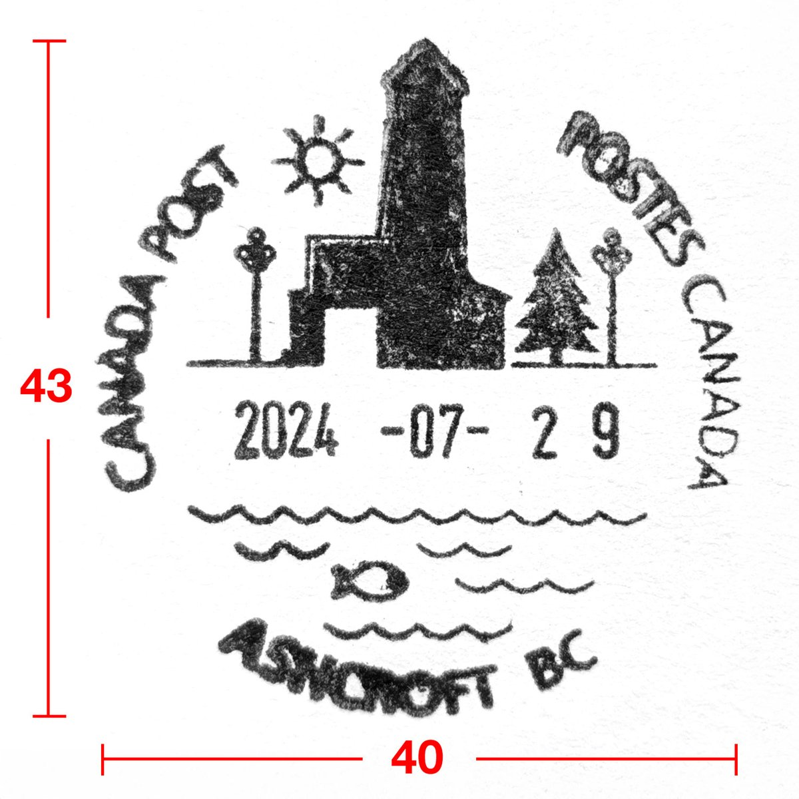

Ashcroft PO pictorial cancel
Old fire brigade buillding, sun, tree, fish, river
- Status
- Active
- Run dates
- ? to present
- Design
- old fire brigade buillding, sun, tree, fish, river
- Ink colour
- Black
- Designer
- Unknown
- Post office
- Ashcroft PO
315 Railway Ave
Ashcroft, BC
V0K 1A0 - Subjects
- architecture, building, fire brigade, nature, sun, plant, tree, river, water, fish, animal
Collect it by mail. Send your stamped covers, with a stamped return envelope, to the post office address above. How to collect pictorial cancels by mail · en français
 Spences Bridge POWHERE THE STEELHEADS MEET THE BIG HORNS
Spences Bridge POWHERE THE STEELHEADS MEET THE BIG HORNS Whistler POSARA BURKE
Whistler POSARA BURKE Peachland POOgopogo: a lake monster, fictional creature
Peachland POOgopogo: a lake monster, fictional creature